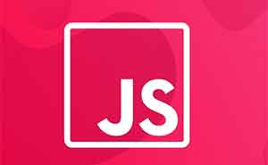
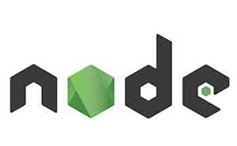

Pana in momentul de fata am studiat documente HTML, am studiat structura acestora, si am si trecut prin cateva elemente de HTML, dar studiul abia a inceput.
Pana acum am studiat elemente cum ar fi:
Urmeaza sa studiem si alte elemente mai avansate cum ar fi:

La un moment dat vom intra si in CSS, unde vom invata sa coloram fundaluri, texte, sa lucram cu dimensiunile textelor.
Iata cateva din proprietatile pe care le vom folosi:
Apoi vom trece la concepte putin mai avansate cum ar fi:

In viitor ne putem uita si la JavaScript unde vom invata detaliile programarii in general cu notiuni de programare si stiinta calculatoarelor.
Spre exemplu:
JavaScriptul este in esenta un limbaj de scripting pentru browsere in principal, prin urmare cu el se manipuleaza site-urile web si se creeaza aplicatiile web, folosind tehnici precum:

Ultima provocare pentru un dezvoltator incepator este node js. Node js este JavaScript pe server.
Avantajele folosirii node sunt:
Dezvantajele folosirii node sunt: